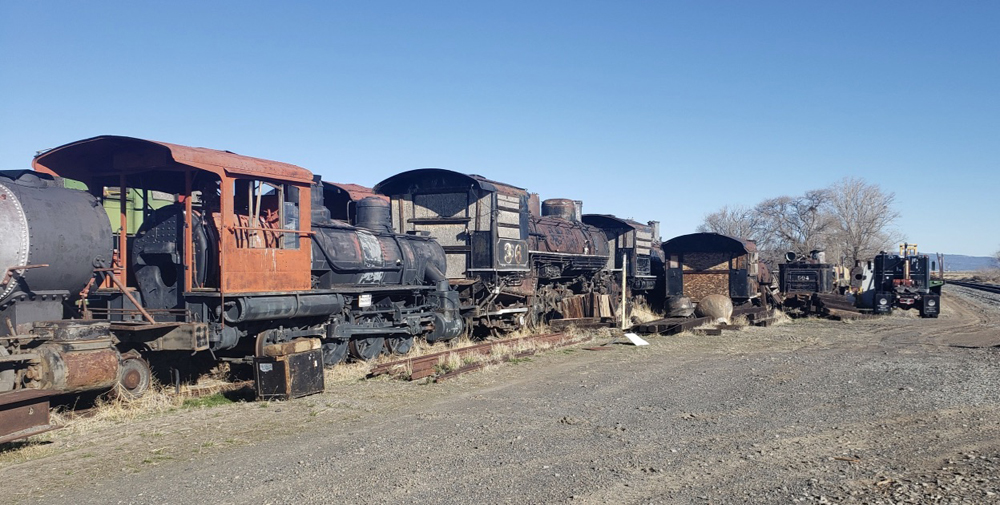

Last updated: 24 June, 20151
| Builder: | Baldwin Locomotive Works |
| Build #: | 29790 |
| Date: | 01/1907 |
| Engine #: | 18 |
| Railroad: | Sierra Railroad |
| Website: | |
| Email: | |
| Location: | Modoc Northern Siding, Nearest identifiable building: Highland Seed & Supply, 22887 S Merrill Rd., Merrill, OR 97633 |
| GPS: | 42.018242,-121.593588 These locomotives still appear on Google Earth as of 2025, Sep 3. |
| Phone: | |
| Status: | Stored |
| Notes: | Fred Kepner collection, from Great Western Railroad Museum, McCloud, CA. These locomotives are literally in what looks like a junkyard, out in the open, and completely accessible, and unsecured. |
| Class: | |
| Gauge: | 4'-8½" |
| F.M.Whyte: | 2-8-0 |
| Drivers: | 42 |
| Gear Ratio: | |
| Tractive Effort: | 26,010 |
| Weight: | 111,850 |
| Weight on Drivers: | 99,700 |
| Length: | |
| Boiler: | |
| Cylinders: | 18x22 |
| Top Speed: | |
| Fuel: | |
| Fuel Type: | Oil |
| Water: | |
| Steam psi: | 180 |